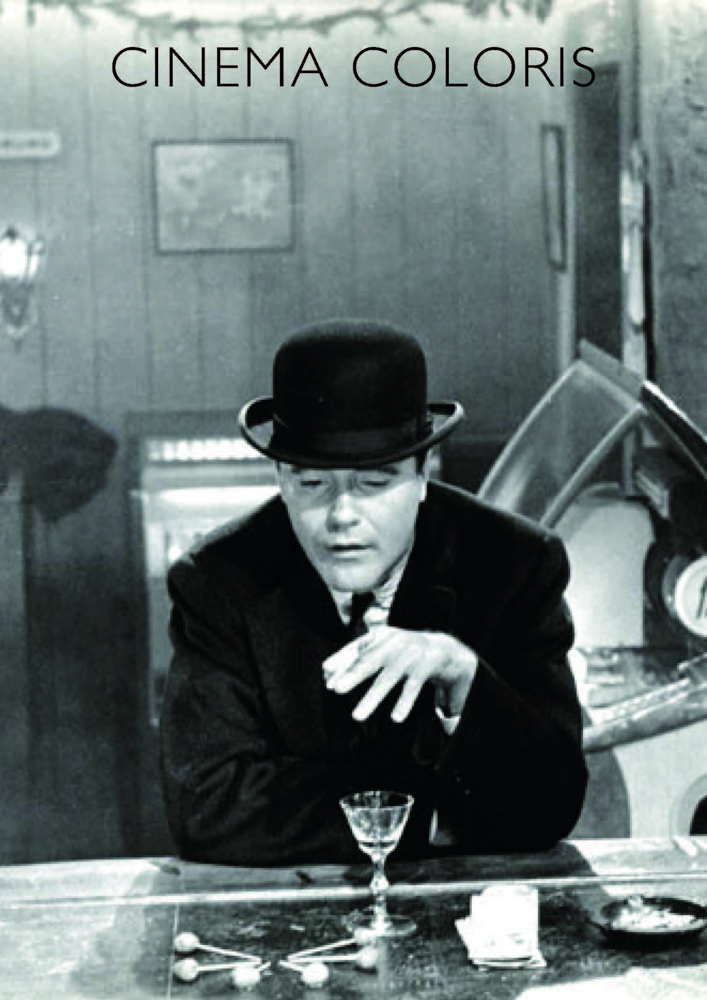

A diferencia de la industria actual basada en la sobreexplotación de ideas, siempre existieron películas que buscaban establecer un vínculo y diálogo con otras que les precedieron, a la vez que poner otro punto y aparte dejando espacio para que entre la mente del espectador, el cual quizá sea otro creador. El apartamento (The apartment, Billy Wilder, EEUU, 1960) nace a partir de la idea de Wilder y Diamond de profundizar en la historia de un personaje secundario de la película Breve encuentro (Brief encounter, David Lean, RU, 1945). Poco tiempo después una nueva película dio pie a vaticinar el futuro de la relación amorosa en el film Días de vino y rosas (Days of wine and roses, Blake Edwards, EEUU, 1962).
La profundidad de campo tiene un gran peso. Concretamente, el uso del punto de fuga está presente a lo largo del film con la intención de generar sensación de insignificancia. Se emplea mayormente para mostrar los espacios de trabajo, retratando a las personas sincronizadas con las maquinas que manejan (véase como ejemplo al protagonista moviendo la cabeza al ritmo de un aparato que está encima de su escritorio), es un elemento deshumanizador. El ejemplo más claro es el de la gran explanada de escritorios. No obstante, se repite en más ocasiones como cuando Buddy espera a la señorita Kubelik para invitarla al teatro, donde aparecen ambos en primer término, detrás de ellos a ambos lados, enmarcándoles, se encuentran los ascensores, generando ese embudo que es el punto de fuga. También se genera con las teleoperadoras, o fuera del ámbito laboral, cuando Buddy se sienta en un banco que parece ser infinito mientras espera para poder volver a casa. Una secuencia clave para entender la relación de Buddy con sus jefes es la de su ascenso. Pese a mejorar su posición sigue en la misma planta, no hay un verdadero ascenso social. Ya dentro de su despacho, cuando la cámara panea hacia la derecha desaparecen de cuadro los interminables escritorios, para mostrar el resto de despachos adosados al suyo, generando así un nuevo punto de fuga haciendo ver que sigue siendo insignificante.
Para entender mejor la relación entre Sheldrake y Kubelik es necesario analizar la secuencia en el restaurante chino. En el plano contraplano, el plano de ella se caracteriza por encuadrar su rostro con muy poco margen, sin espacio para moverse. Detrás de ella se encuentra una pecera, reincidiendo otra vez en la idea por un lado de estar atrapada, y por otro, de ser un mero adorno. A su vez, el plano correspondiente a Sheldrake es más abierto, y detrás al fondo se encuentra la puerta del local. De esta forma se subraya la falta de responsabilidad afectiva de este. El plano donde aparecen ambos se encuentra partido por un pilar que los separa, a su vez, las vigas del local enmarcan a Sheldrake dentro de un dibujo esquemático que recuerda al de una casa, evidenciando que las promesas de este son totalmente vacías y que él nunca abandonará su vida familiar. Cuando se introducen los escorzos en el plano contraplano se rompe una barrera entre los personajes y se da un acercamiento fruto de la manipulación por un lado, y de la tóxica dependencia por otro.
Un elemento físico con gran carga simbólica es la llave del baño de ejecutivos, la metáfora del baño resalta lo sucio e inmoral, una puerta que cuando se atraviesa no se vuelve atrás y se entra en un mundo sórdido construido a base del abuso de poder. Buddy, armado con la poca dignidad que le queda da un paso atrás.